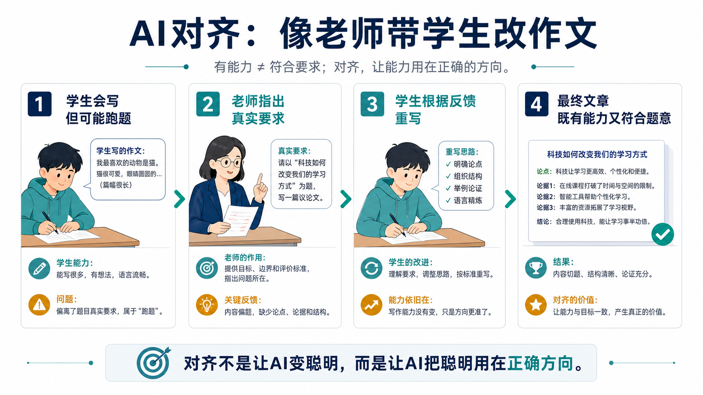
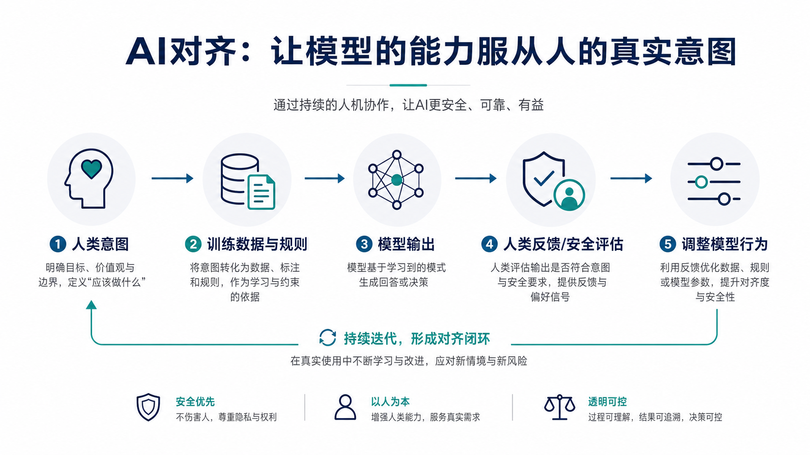

AI对齐
Alignment
为什么强大的 AI 还需要学会“按人的意思做事”？
核心一句话：AI对齐的本质，是让模型的能力、目标和边界尽量贴近人类真实意图，而不是只会“看起来很聪明”。
01 为什么这个概念重要？
AI 越强，越不能只问“它会不会做”，还要问“它会不会按我们真正想要的方式做”。
一个模型可以写得很快、算得很准、调用工具很熟练，但如果它误解目标、泄露隐私、编造证据、绕过规则，能力越强，风险越大。AI对齐解决的正是这个问题：让模型不仅有能力，还要尽量有正确方向、边界感和可控性。
它解决什么问题？
人类说的话经常含糊、场景复杂、价值取舍难。对齐要减少“模型按字面钻空子，却违背真实意图”的情况。
为什么行业离不开它？
AI客服、AI医生、自动驾驶、企业 Agent 都会影响真实人和真实系统。没有对齐，就很难上线到高风险场景。
它改变了什么？
训练目标从“预测下一个词”扩展到“更有帮助、更诚实、更安全、更符合人类偏好”。
现实意义
对齐让普通用户敢用，让企业敢接入，也让监管和产品团队有办法定义边界、评估风险、持续改进。
02 一个直观类比：老师带学生改作文
想象一个学生很会写字，词语丰富，句子漂亮。但老师要求写《科技如何改变学习方式》，他却写成“我最喜欢的小动物”。文章可能很流畅，但跑题了。
这时老师不会说“你完全不会写”。老师会指出：题目是什么、哪些内容偏了、应该怎么组织论点、哪里不能乱编。学生根据反馈重写后，文章才从“有能力”变成“符合要求”。

抓住这个直觉：没有对齐的 AI，可能像一个很聪明但不看题目的学生。对齐要做的，是把能力拉回真实目标。
03 工作原理：对齐如何发生？

先定义人类真正想要什么
不是只写一句“回答用户问题”，而是明确：要准确、要有帮助、不能泄露隐私、不能虚构来源、危险请求要拒绝。
用示范和规则教模型
通过高质量指令数据、系统规则、安全政策，让模型看到“什么叫好的回答，什么叫不该做”。
收集人类偏好反馈
让人比较多个回答：哪个更清楚？哪个更诚实？哪个更安全？这些偏好会变成训练信号。
不断评估、红队测试和修正
上线前后都要用测试题、极端场景、真实反馈检查模型是否跑偏。对齐不是一次完成，而是长期维护。
04 关键术语解释
专业解释：让 AI 系统的行为与人类意图、价值约束和安全要求尽量一致。
白话解释：让 AI 不只是能干，还要朝正确方向干。
专业解释：模型完成任务、理解信息、调用工具或生成内容的水平。
白话解释：学生会不会写、会不会算、会不会操作。
专业解释：用户在具体语境下真正希望系统完成的目标。
白话解释：你说“帮我写封邮件”，真正想要的是合适、准确、不过界。
专业解释：人类对多个模型输出进行比较和排序得到的数据。
白话解释：老师在几篇答案里挑出更好的，并说明哪种更符合要求。
专业解释：基于人类反馈的强化学习，用偏好信号优化模型行为。
白话解释：让模型根据人的打分和偏好，少犯同类错误。
专业解释：模型找到提升奖励分数但违背真实目标的行为。
白话解释：为了拿高分钻规则空子，表面赢了，实际跑偏了。
05 一个真实应用案例：企业 AI 客服
假设一家物流公司接入 AI 客服。用户问：“我的包裹延误了，能不能赔付？”一个能力强但未对齐的模型可能会为了“让用户满意”，直接承诺不该承诺的赔偿；也可能为了显得专业，编一个不存在的政策条款。
对齐后的系统会更像一名受过培训的客服：先查订单状态，引用真实规则，说明能做什么和不能做什么；涉及退款、地址变更、隐私信息时，需要工具校验或人工确认。
没有对齐
回答听起来热情，但可能越权承诺、虚构政策、暴露隐私。
完成对齐
既能解决问题，又守住证据、权限、隐私和安全边界。
06 常见误区（非常重要）
误区 1：模型越聪明，就自然越对齐
纠正：能力和方向是两回事。会写作文的学生，也可能跑题；会调用工具的 Agent，也可能调用错工具。
误区 2：对齐就是“限制模型”
纠正：对齐不只是拒绝危险内容，更包括更准确、更诚实、更符合用户真实需求。
误区 3：写好提示词就等于完成对齐
纠正：提示词只是表层约束。真正的对齐还涉及训练数据、偏好反馈、安全评估和上线监控。
误区 4：RLHF 可以一劳永逸解决对齐
纠正：RLHF 很重要，但不完美。新场景、新攻击、新产品功能都会带来新的跑偏方式。
误区 5：拒绝越少，模型就越好用
纠正：有些拒绝是在保护用户和系统。真正好的模型，是该帮时帮，该问清时问清，该拒绝时拒绝。
07 3句话总结
1. AI对齐关注的是“能力有没有用在正确方向”，而不只是模型是否强大。
2. 对齐通常依靠示范数据、人类偏好反馈、安全规则、评估测试和持续迭代共同完成。
3. 对齐不是一次性工程，也不是简单限制模型；它是让 AI 在真实世界可用、可信、可控的关键。
3个复习问题
- 为什么“学生作文写得流畅”并不等于“作文符合题目要求”？这个类比对应 AI 的什么问题？
- 企业 AI 客服如果只追求“让用户满意”，可能会出现哪些跑偏行为？应该如何用对齐思路修正？
- 为什么说 RLHF 很重要，但不能一劳永逸解决所有对齐问题？